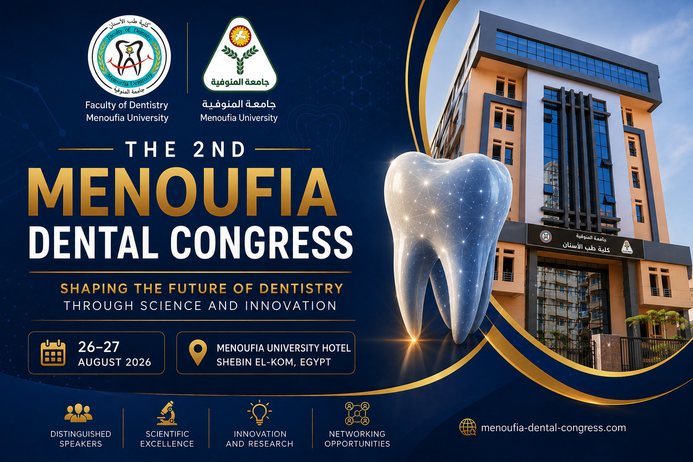

اختار سؤالك
تنبيه: لم تتم إضافة جدول رسمي أو خريطة تفصيلية للقاعات حتى الآن. لن يخمّن المساعد موعدًا أو رقم مدرج؛ سيطلب الرجوع للمصدر الرسمي عند عدم توافر المعلومة.

Discover new knowledge, connect with experts, and explore the future of dentistry.
Explore the latest scientific developments, research, and clinical advances in dentistry.
Learn from distinguished professors, clinicians, and leading dental experts.
Connect with dentists, researchers, students, and professionals from different fields.
Discover emerging technologies and innovative approaches shaping the future of dentistry.